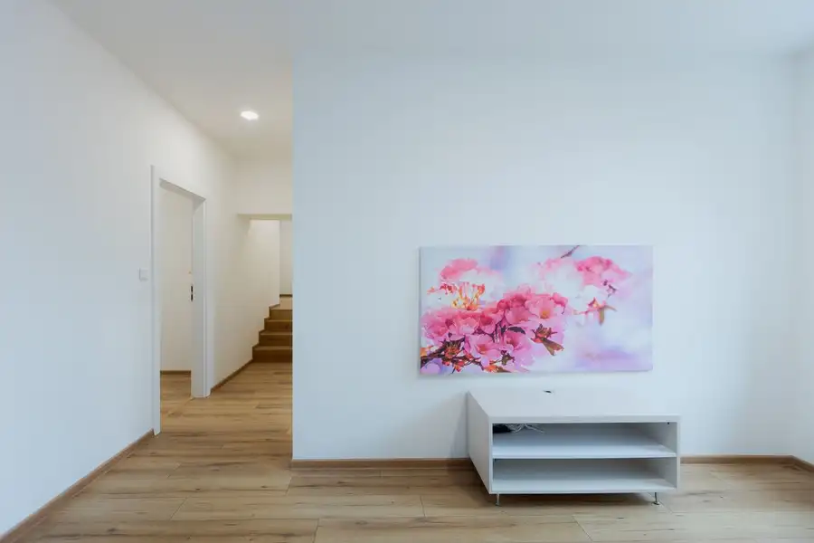
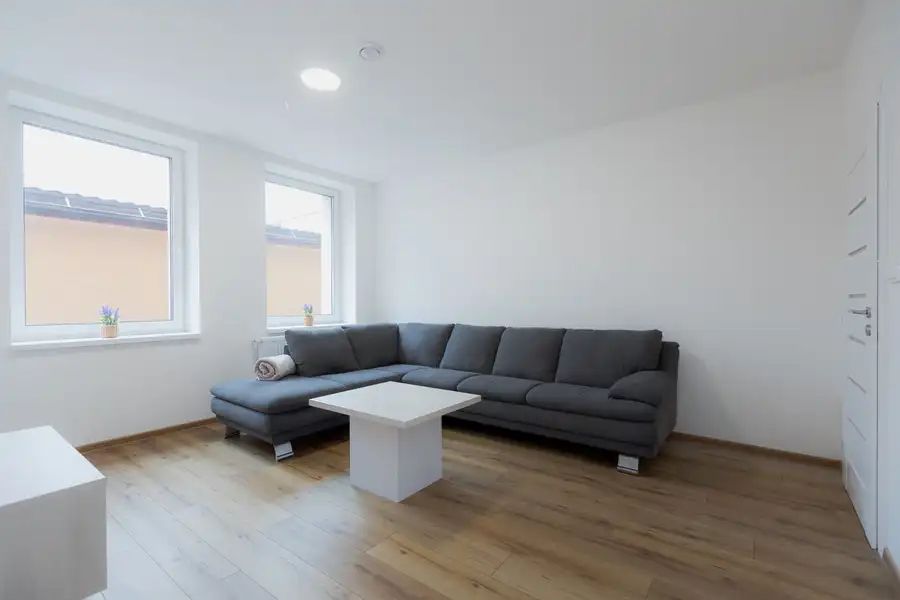
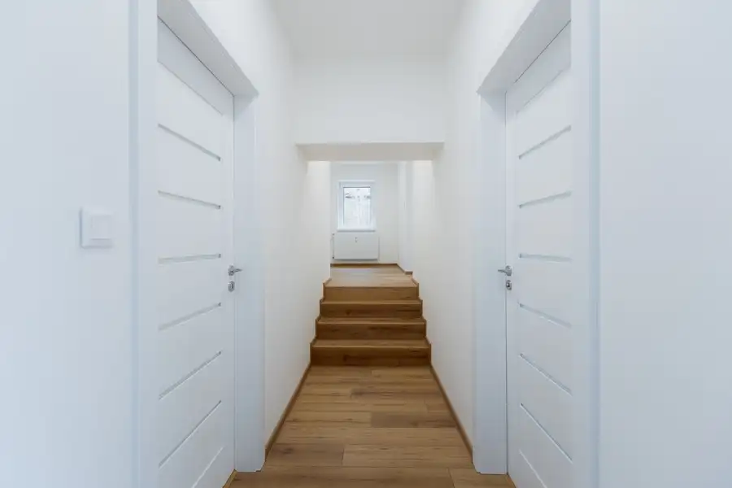
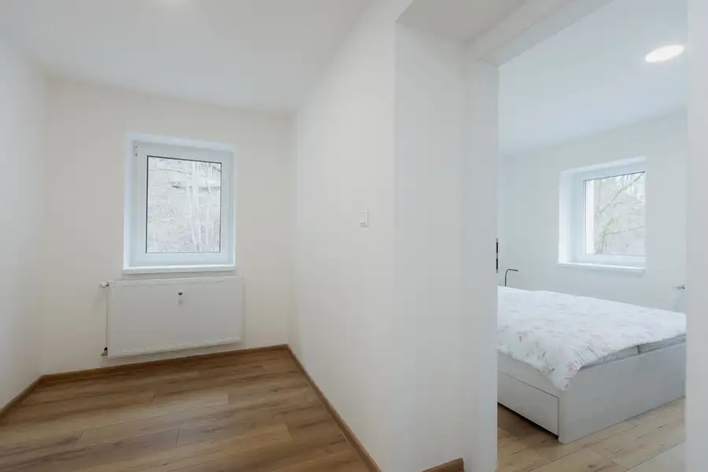
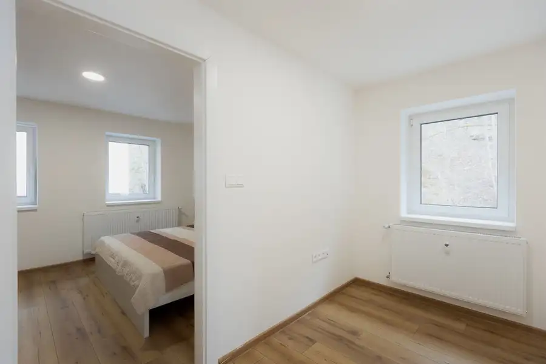
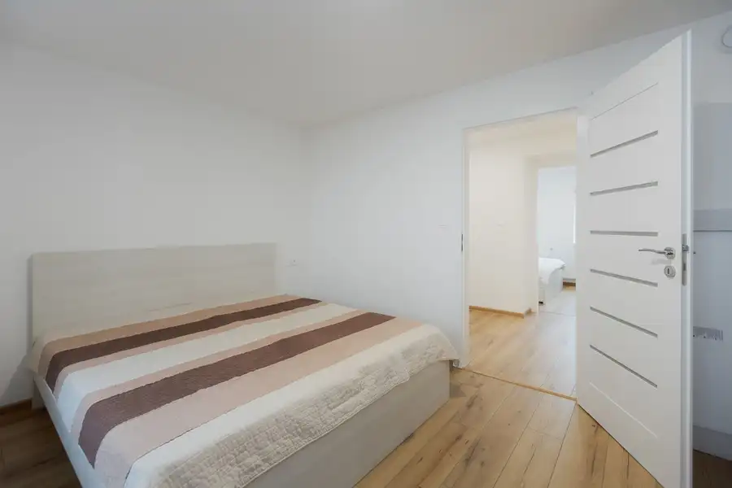

Ponuka 3-izbového bytu v projekte BYTY NA NÁMESTÍ
Dolný Kubín






- Dispozícia3-izbový
- Plocha83 m²
- StavNovostavba
- VlastníctvoOsobné
O nehnuteľnosti
Realitná kancelária OREA predstavuje novostavbu v projekte Byty na námestí v Dolnom Kubíne ktoré sa nachádzajú priamo v centre mesta na Hviezdoslavovom námestí. Tento priestranný byt má výmeru 83 m2 s kobkou a dispozične pozostáva zo vstupnej chodby, obývacej izby, samostatnej kuchyne s jedálňou, kúpeľne s WC, menšieho priestoru ktorý je vhodný ako pracovňa a dvoch spální. K bytu bude prislúchať aj pivničná kobka. Izby sú orientované na tri svetové strany a nachádza sa v ňom aj rekuperácia. Výhodou projektu je lokalita, nové bývanie sa nachádza v centre mesta a zároveň v tichej lokalite. Byt bude novému majiteľovi odovzdaný kompletne dokončený v prevedení štandard:• podlahy,• obložkové zárubne s interiérovými dverami,• exteriérové dvere,• sanita v kúpeľni a WC• obklad a dlažba Samostatný vchod len pre dva byty zabezpečí dokonalé súkromie.Lokalita už nemôže byť ani lepšia, nakoľko ide o historické centrum Dolného Kubína, s vynikajúcou dostupnosťou.Pri bytoch je možný odpočet DPH. Pre bližšie informácie ma neváhajte kontaktovať na tel. č. 0907 089 025 alebo mailom na adrese michal.hubcik@rkorea.sk
Parametre
- Cena vrátane energií
- Nie
- Druh
- 3 izbový byt
- Dátum zverejnenia
- 23. 04. 2025
- Počet izieb / miestností
- 3
- Stav nehnuteľnosti
- Novostavba
- Typ
- Predaj
- Vlastníctvo
- Osobné
- Úžitková plocha
- 83 m²